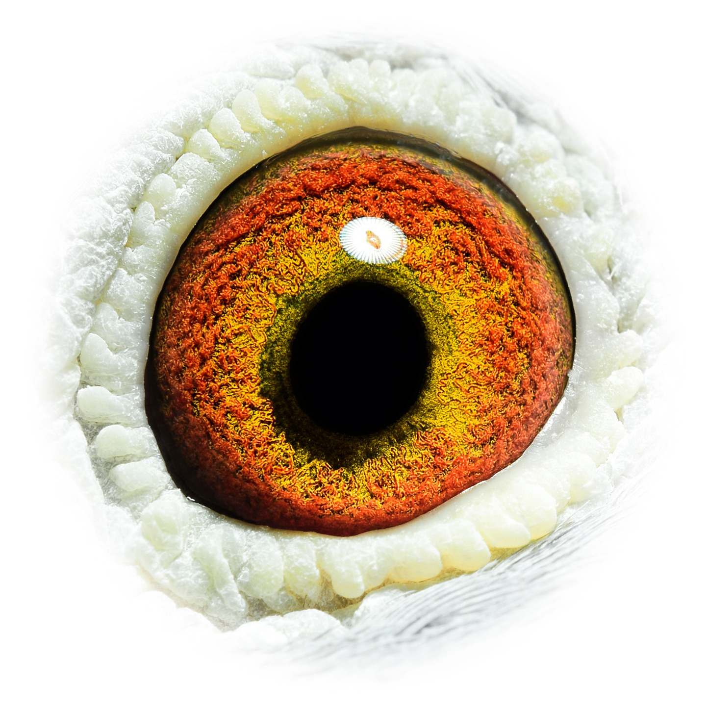
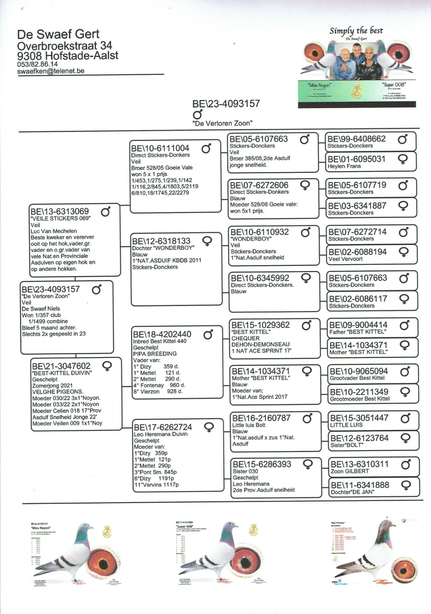

Kweekprofiel
BE23-4093157 · Gert De Swaef

Gert De Swaef
BE23-4093157
De Verloren Zoon is afkomstig van het topkweekhok van Gert De Swaef en verenigt Stickers-Donckers, en Best Kittel met Leo Heremans-invloed.


Resultaten bij andere liefhebbers
De vijf sterkste prestaties van alle nakomelingen samen, geselecteerd op clubcoëfficiënt.
| Ringnummer | Vlucht | Club / lokaal | Groter verband |
|---|---|---|---|
| BE25-4048059 | Quiévrain · 46 km | 1 / 152 | — |
| BE25-4048060 | Noyon · 150 km | 7 / 891 | — |
| BE25-4048059 | Quiévrain · 46 km | 2 / 234 | — |
| BE25-4048059 | Quiévrain · 46 km | 2 / 119 | — |
| BE25-4048059 | Quiévrain · 46 km | 1 / 58 | — |
Klik op een ringnummer om rechtstreeks naar de juiste duif op de referentiepagina te gaan.